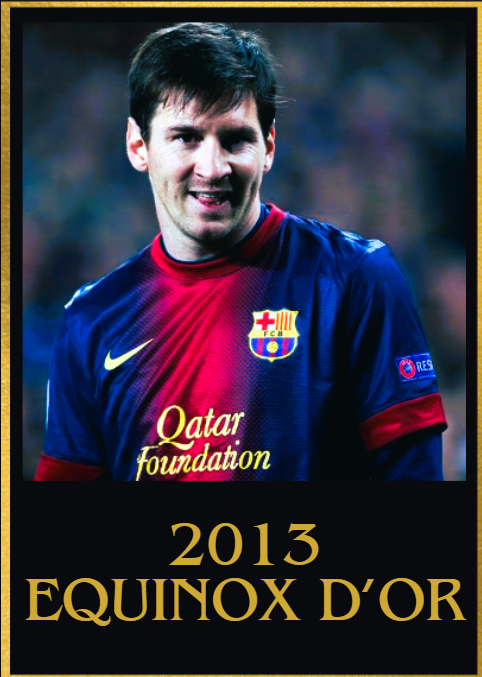
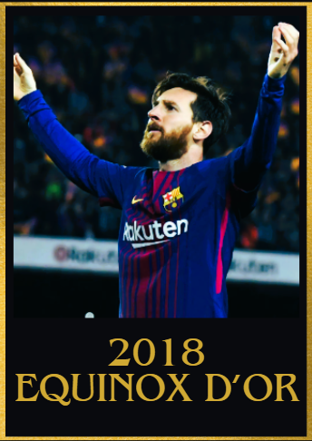

2010s Equinox d'Or Winners
2009/2010
1st: Lionel Messi 🇦🇷 Barcelona
2nd: Xavi Hernández 🇪🇸 Barcelona
3rd: Diego Milito 🇦🇷 Internazionale Milan
4th: Arjen Robben 🇳🇱 Bayern München
5th: Cristiano Ronaldo 🇵🇹 Real Madrid

Achievements
- 61 goal contributions
- La Liga Winner
- European Golden shoe winner
- UEFA Champions league semi finalist
- UEFA Champions League Top scorer
- UEFA Super Cup winner
- La liga best player
- Supercopa de España winner
- Club world cup winner
Key Moments
- 4 goals vs Arsenal in the UEFA Champions league quarter finals
- Brace vs VFB Stuttgart
- Hat trick of assists vs Espanyol
- Game winning assist vs Shakthar Donetsk in the UEFA Super cup final
- Goal in the Club world cup final vs Estudiantes LP
- 2 goals and 1 assist vs Atletico Madrid, Racing and Real Valladolid
- Brace vs Villarreal, CD Tenerife, UD Almeria, Sevilla and Deportivo la Coruña
- Brace vs Atletic Bilbao in the Supercopa de España final
- Hat trick vs Valencia
- 3 goals and 1 assist vs Real Zaragoza and CD Tenerife
2010/2011
1st: Lionel Messi 🇦🇷 Barcelona
2nd: Cristiano Ronaldo 🇵🇹 Real Madrid
3rd: Andres Iniesta 🇪🇸 Barcelona
4th: Xavi Hernandez 🇪🇸 Barcelona
5th: Samuel Eto'o 🇨🇲 Internazionale Milan

Achievements
- 90 goal contributions
- UEFA champions league winner
- UEFA Champions league top scorer
- La liga and UCL player of the season
- La liga and Supercopa de España winner
- Copa del Rey finalist
Key Moments
- 2 assists vs Costa Rica in the Copa America
- 2 goals and 2 assists vs Panathinaikos
- Brace vs Real Madrid in the UEFA Champions league semi final
- Brace vs Arsenal in the UEFA Champions league quarter final
- Goal vs Manchester United in the UEFA Champions league final
- Brace vs Real Zaragoza, Hercules and Real Sociedad
- Hat trick of assists vs Espanyol
- 2 assists vs Real Madrid
- 3 goals and 2 assists vs UD Almeria
- 2 goals and 1 assist vs Sevilla, Osasuna, UD Almeria
- Hat trick vs Atletico Madrid, Real Betis
- Hat trick vs Sevilla in Supercopa de España final
- 1 goal and 2 assists vs Getafe and Deportivo La Coruña
2011/2012
1st: Lionel Messi 🇦🇷 Barcelona
2nd: Cristiano Ronaldo 🇵🇹 Real Madrid
3rd: Andrea Pirlo 🇮🇹 Juventus
4th: Andres Iniesta 🇪🇸 Barcelona
5th: Xavi Hernández 🇪🇸 Barcelona

Achievements
- 115 goal contributions
- European golden shoe
- Supercopa de España winner
- Copa del Rey winner
- UEFA Champions league semi finalist
- UEFA Champions league top scorer
- Club world cup winner
- UEFA Super cup winner
Key Moments
- 5 goals vs Bayer 04 Leverkusen in the UEFA champions league round of 16
- Hat trick vs Viktoria Plezen
- 2 goal contributions vs Porto in the UEFA Super cup final
- Brace vs Santos in Club World Cup final/li>
- 5 goal contributions vs Real Madrid across 2 legs in the Supercopa de España final
- Hat trick and 2 assists vs Osasuna
- Hat trick and assist vs Atletico Madrid, Mallorca and Granada
- 4 goals vs Espanyol and Valencia
- 2 goals and 3 assist vs Rayo Vallenaco
- Accumulated 14 goal contributions in 7 consecutive games (in the second half of the year)
- 1 goal and 2 assists vs Getafe
- 2 goals and 1 assist vs Villarreal and Real Zaragoza
- Hat trick vs Switzerland and Brazil in international friendlies
2012/2013
1st: Lionel Messi 🇦🇷 Barcelona
2nd: Cristiano Ronaldo 🇵🇹 Real Madrid
3rd: Manuel Neuer 🇩🇪 Bayern München
4th: Thomas Müller 🇩🇪 Bayern München
5th: Robert Lewandowski 🇵🇱 Borussia Dortmund

Achievements
- European Golden shoe
- IFFHS World's Best Top Goalscorer Award
- La Liga winner
- Supercopa de España runner up
- 89 goal contributions
- UEFA Champions league semi finalist
Key Moments
- 2 goals vs Real Madrid across 2 legs in the Supercopa de españa finalp
- 2 goals and 1 assist vs Spartak Moscow
- 2 goals vs A.C. Milan
- Brace vs Real Sociedad, Osasuna, Getafe, Real Madrid, Rayo Vallenaco, Mallorca, Levante, Atletic Bilbao, Real Betis(twice),Granada Atletico Madrid and Real Valladolid
- 2 goals and 1 assist vs Rayo Vallenaco and Real Zaragoza
- 2 assists vs Sevilla
- Hat trick and 1 assist vs Deportivo La Coruña
- 1 goal and 2 assists vs Malaga
- 4 goals vs Osasuna
2013/2014
1st: Cristiano Ronaldo 🇵🇹 Real Madrid
2nd: Lionel Messi 🇦🇷 Barcelona
3rd: Luis Suarez 🇺🇾 Liverpool
4th: Manuel Neuer 🇩🇪 Bayern München
5th: Toni Kroos 🇩🇪 Bayern München

Achievements
- 83 goal contributions
- UEFA champions league winner
- UEFA champions league top scorer(also broke the record for most goals in a single UEFA champions league campaign)
- European golden shoe winnner
- Copa del Rey winner
Key Moments
- Brace vs Atletico Madrid in Copa del Rey Semi final
- Brace vs Elche, Rayo Vallenaco, Celta Vigo and Osasuna
- 2 goals and 2 assists vs Getafe
- Hat trick and 1 assist vs Real Sociedad
- Hat trick vs Sevilla
- Crucial goals vs Barcelona and Atletico Madrid in La Liga
- Hat trick and 1 assist vs Galatasaray
- Brace vs Copenhagen and Juventus
- 2 goals and 2 assists vs Schalke
- Brace vs Bayern München in the UEFA Champions league semi final
- Goal and assist vs Atletico Madrid in the UEFA champions league final
- Hat trick vs Sweden to send Portugal to the 2014 world cup
2014/2015
1st: Lionel Messi 🇦🇷 Barcelona
2nd: Cristiano Ronaldo 🇵🇹 Real Madrid
3rd: Neymar Jr 🇧🇷 Barcelona
4th: Luis Suarez 🇺🇾 Barcelona
5th: Eden Hazard 🇧🇪 Chelsea

Achievements
- UEFA Champions League golden boot
- La liga winner
- UEFA Champions League Winner
- Copa Del Rey Winner
- 100 goal contributions
- La liga MVP
- Copa America finalist
- Copa America Player of the tournamnet
- UEFA Champions League Player Of The Season
Key Moments
Brace vs Athletic Bilbao in the Copa Del Rey final
Brace vs Deportivo la Coruña, Eibar, Cordoba and Elche
2 assists vs Bilbao
1 goal and 2 assists vs Levante
2 goals and 1 assist vs Getafe and Cordoba
Hat trick and 1 assist vs Rayo Vallenaco and Levante
Hat trick vs Sevilla, Deportivo La Coruña and Espanyol
2 goals and 2 assists vs Elche
1 goal and 3 assists vs Athletic Bilbao
Hat trick vs APOEL Nicosia
2 goals and 1 assist vs Bayern München in the UEFA Champions league semi final
Hat trick of assists vs Paraguay in the copa america semi finals
2015/2016
1st: Cristiano Ronaldo 🇵🇹 Real Madrid
2nd: Lionel Messi 🇦🇷 Barcelona
3rd: Neymar Junior 🇧🇷 Barcelona
4th: Luis Suarez 🇺🇾 Barcelona
5th: Antoine Griezmann 🇫🇷 Atletico de Madrid

Achievements
- UEFA Champions League Winner
- Euros Winner(Winning the first ever international trophy for Portugal)
- UEFA Champions League golden boot
- Euros Silver boot
- Euros Silver Ball
- UEFA Champions League player of the Season
- 75 goal contributions
Key Moments
- Iconic comeback where he scored a hat trick vs Wolfsburg in the UEFA champions league quarter finals
- 3 goal contributions vs AS Roma in the UEFA champions league RO16
- Poker vs Celta Vigo
- Hat trick vs Espanyol
- Crucial winning goal vs Barcelona
- 3 goal contributions vs Hungary
- Game winning assist vs Croatia in the Euros round of 16
- Game winning goal vs wales to send Portugal to the Euros final
- 4 goals and 2 assists vs Malmo
- 2 goals and 2 assists vs Shakthar Donetsk
- Hat trick vs Shakthar Donetsk
- 5 goals and 1 assist vs Espanyol
- 2 goals and 1 assist vs Rayo Vallenaco and Athletic Bilbao
- 1 goal and 2 assists vs Eibar
- 2 assists vs Deportivo la Coruña
- Brace vs Deportivo la Coruña, Valencia, Sporting Gijon and Real Sociedad
2016/2017
1st: Cristiano Ronaldo 🇵🇹 Real Madrid
2nd: Lionel Messi 🇦🇷 Barcelona
3rd: Neymar Junior 🇧🇷 Barcelona
4th: Luka Modric 🇭🇷 Real Madrid
5th: Gianluigi Buffon 🇮🇹 Juventus

Achievements
- UEFA champions league winner
- First player to score 10 goals in the UEFA Champions League knockouts (in the UEFA Champions League Era)
- UEFA Champions League Golden boot
- La Liga Winner
- Supercopa de España winner
- UEFA super cup winner
- Club World cup winner
- 3rd place finish in the Confederations cup with Portugal
- 70 Goal contributions
Key Moments
- 5 goal contributions vs Bayern across two legs in the UEFA Champions league quarter finals
- A hat trick against Atletico in the UEFA Champions League Semi finals
- A brace vs Juventus in the UEFA Champions League final
- 4 goals vs Andorra
- 2 assists vs Legia Warsawz
- Hat trick vs Kashima Antlers in the club world cup final
- Hat trick vs Atletico Madrid and Alaves
- 2 assists vs Athletic Bilbao
- Brace vs Sevilla, Celta Vigo, Las Palmas and Sporting Gijon
2017/2018
1st: Lionel Messi 🇦🇷 Barcelona
2nd: Cristiano Ronaldo 🇵🇹 Real Madrid
3rd: Neymar Junior 🇧🇷 Paris Saint Germain
4th: Eden Hazard 🇧🇪 Chelsea
5th: Mohamed Salah 🇪🇬 Liverpool

Achievements
- 75 goal contributions
- La Liga winner
- European golden boot winner
- Copa del Rey Winner
- Supercopa de España finalist
Key Moments
- Hat trick vs Deportivo La Coruña, CD Leganes and Espanyol
- 2 assists vs SD Eibar
- 2 goals and 1 assist vs Girona, Real Betis and Las Palmas
- 4 goals and 1 assist vs SD Eibar
- 1 goal and 1 assist vs Real Madrid
- Game winning goal vs Athletico Madrid
- 1 goal and 2 assists vs Sevilla
- 2 assists vs France in the World Cup
- Brace vs Juventus
- 2 goals and 1 assist vs Chelsea
2018/2019
1st: Lionel Messi 🇦🇷 Barcelona
2nd: Virgil Van Dijk 🇳🇱 Liverpool
3rd: Cristiano Ronaldo 🇵🇹 Juventus
4th: Kylian Mbappé 🇫🇷 Paris Saint-Germain
5th: Eden Hazarrd 🇧🇪 Chelsea

Achievements
- La Liga Winner
- La Liga Player of the season
- UEFA champions league top scorer
- European golden shoe winnner
- Copa del Rey finalist
- Supercopa de España winner
- 3rd place finish in Copa America
- 77 Goal contributions
Key Moments
- Hat trick vs PSV Eindhoven
- Brace vs Tottenham Hotspur
- 2 goals and 2 assists vs Olympique Lyon in the UEFA Champions league Round of 16
- Brace vs Manchester United in the UEFA Champions League Quarter finals
- Brace vs Liverpool in the UEFA Champions League Semi finals
- 1 goal vs Valencia in the copa del rey final
- 2 assists vs Sevilla in the Supercopa de España final
- Brace vs Alaves, Real Betis, Valencia, Espanyol and SD Eibar
- An assist to secure a third place finish in the Copa America vs Chile
- Hat trick vs Real Betis
- 2 goals and 2 assists vs SD Huesca
- Hat trick and 2 assists vs Levante
- Hat trick and 1 assist vs Sevilla
- 2 goals and 1 assist vs Espanyol